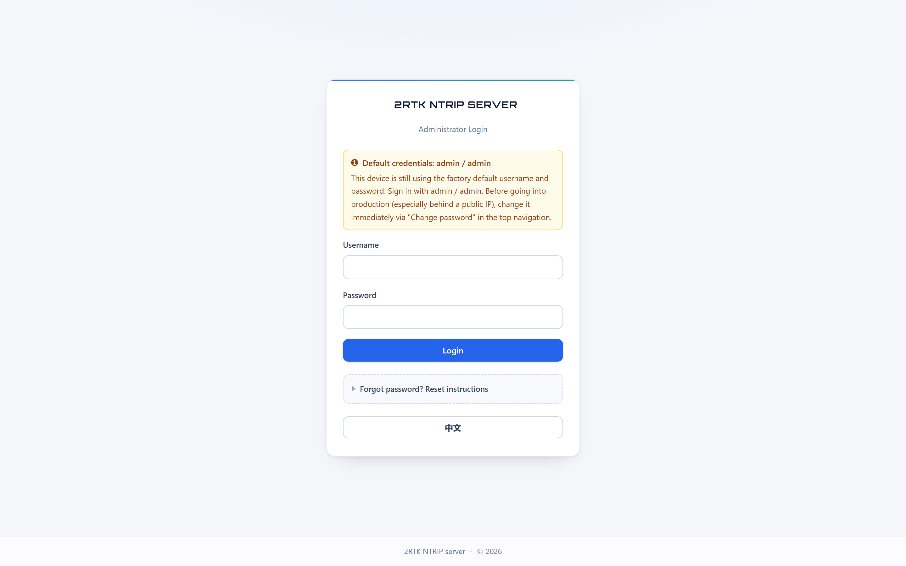
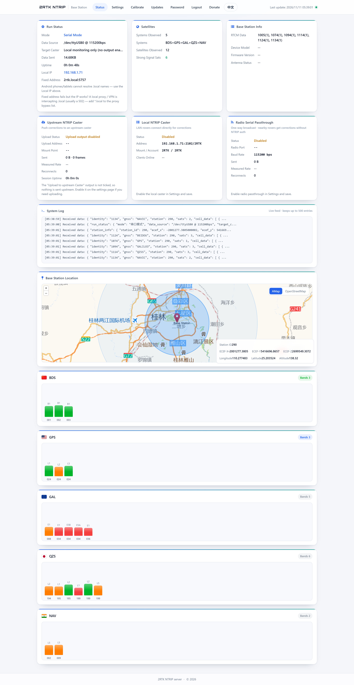
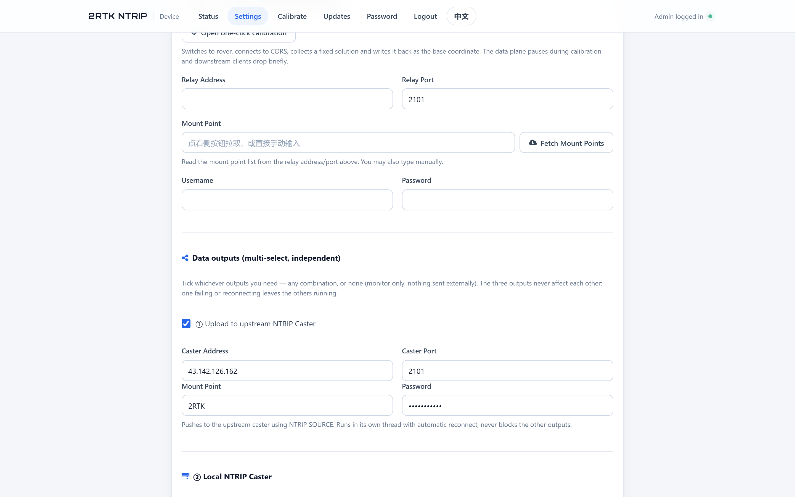
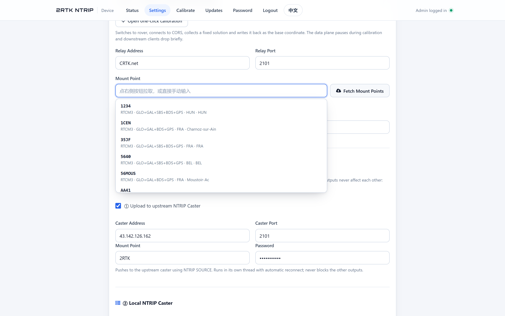
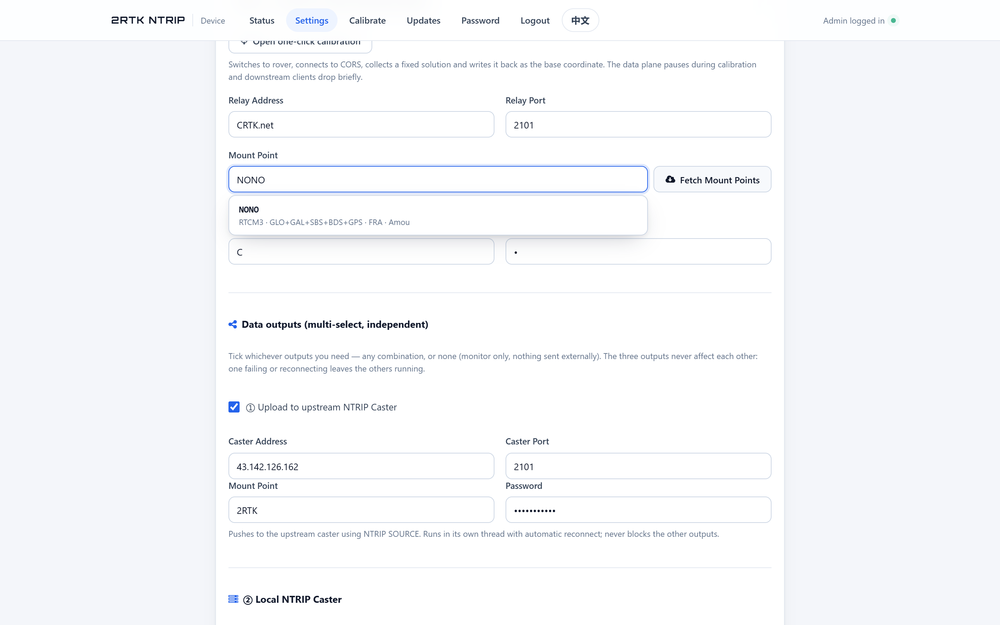
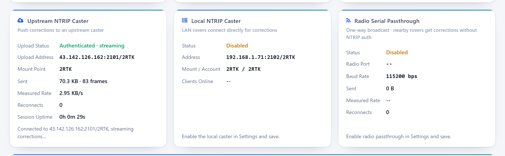
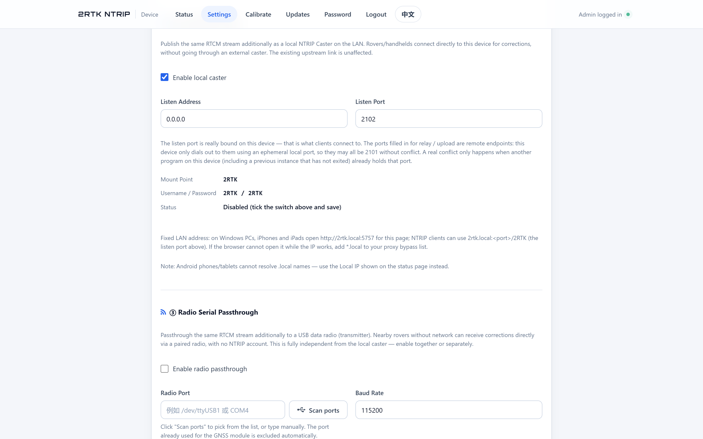

2RTKserver 完整使用教程
从零开始，在廉价 ARM 盒子、树莓派或任意 Linux 主机上搭一台完整的 RTK 基准站。
适用版本： 3.1.3
实测环境： Amlogic S905L3B 电视盒子运行 Armbian（Ubuntu 22.04，aarch64），Quectel LG290P 模块经 CH340 USB 转串口连接。
目录
- 这个程序是做什么的
- 需要准备什么
- 硬件接线
- 全新安装
- 首次登录与状态页
- 串口配置
- 坐标标定
- 上传到云端 NTRIP Caster
- 中继模式（Relay）
- 内置本地 Caster
- 数传电台透传
- 日常维护
- 附录 A — 支持的模块
- 附录 B — 常见问题
1. 这个程序是做什么的
2RTKserver 把一个 GNSS 接收模块变成独立运行的 RTK 基准站。它从串口读取模块输出的 RTCM 3 差分数据，通过网络分发出去，让野外的流动站获得厘米级定位。
它不只是个数据搬运工，还会：
- 自动标定基站坐标到厘米级——自动驱动模块走完所需的命令序列。
- 失败自动回滚——任何一步出问题都会把模块恢复到标定前的状态，不会把接收机留在半残模式下。
- 注入基站元信息，让流动站知道基站在哪、用的是哪个坐标系。
- 提供 Web 界面，用于配置、实时监控和固件检查。
三种运行模式
| 模式 | 作用 | 使用场景 |
|---|---|---|
none |
读取模块，只在本地显示，不对外输出 | 台面测试、首次验证 |
serial |
从串口读模块数据并通过 NTRIP 分发 | 基站正常运行状态 |
relay |
从另一个 Caster 拉流后重新分发 | 打通网络、扩展覆盖 |
数据可以往哪里去
三个出口互相独立，可以任意组合启用：
- 云端 NTRIP Caster —— 把数据流推到公网服务器。
- 本地 NTRIP Caster —— 直接在盒子上对局域网提供服务。
- 无线电数传 —— 通过第二个串口把差分推给 UHF 电台。
2. 需要准备什么
硬件
| 物品 | 说明 |
|---|---|
| Linux 主机 | 任意 ARM 开发板、迷你主机或旧笔记本。实测 Amlogic S905L3B + Armbian。 |
| GNSS 模块 | Quectel LG290P（多频，推荐）、u-blox ZED-F9P、Unicore UM980/N4、Quectel LC29H。 |
| USB 转串口 | CH340、CP2102、FT232，或模块自带的 USB 口。 |
| GNSS 天线 | 必须能看见天空。 这一项比其他任何因素都关键。 |
| 天线馈线 | 低损耗同轴线，越短越好。每多一米都在损失信号。 |
📷 实物照片占位 — hardware-overview
需要：全套设备摆在桌面上的照片——盒子、GNSS 模块、USB 转串口、天线、馈线。
网络
- 主机需要能访问你的 CORS 服务商（用 CORS 标定时）或你的云端 Caster。
- 局域网内访问需要知道主机的 IP 地址。
账号
- CORS 账号 —— 只有用 CORS 一键固定标定才需要。服务商一般会给你：服务器地址、端口、用户名、密码、挂载点名称。
- 云端 Caster 账号 —— 只有要发布数据流时才需要。
3. 硬件接线
接线就这么几根：
┌──────────────┐ USB ┌───────────────┐ UART ┌─────────────┐
│ Linux 盒 │ ───────► │ USB 转串口 │ ────────► │ GNSS 模块 │
│ │ │ (CH340 等) │ │ (LG290P) │
└──────────────┘ └───────────────┘ └──────┬──────┘
│ SMA
▼
┌─────────────┐
│ 天线 │
└─────────────┘
- 把 GNSS 模块接到 USB 转串口：
TX → RX、RX → TX、GND → GND。供电按模块数据手册来。 - 把转接头插到主机的 USB 口，系统里会出现
/dev/ttyUSB0（CH340）或/dev/ttyACM0（原生 USB CDC）。 - 天线拧到模块的 SMA 座上，放到能看见天空的地方。别放铁皮屋顶下、别贴墙——收不到卫星，基站没法自己标定。
📷 实物照片占位 — wiring-closeup
需要：模块接到 USB 转串口的特写，能看清 TX/RX/GND；以及天线室外安装的照片。
确认系统认到了转接头
装程序之前，先确认系统能看到设备：
ls -l /dev/ttyUSB* /dev/ttyACM* 2>/dev/null
正常会看到类似这样的输出：
crw-rw---- 1 root dialout 188, 0 Nov 11 05:20 /dev/ttyUSB0
如果什么都没有，说明转接头没被识别。先换个 USB 口或换根线，再往下走。
4. 全新安装
4.1 把源码放到主机上
cd ~
git clone <你的仓库地址> 2RTKserver
cd 2RTKserver
没有 git 访问权限的话，用 scp 或 U 盘把整个项目文件夹拷过去即可。安装脚本做的是纯复制、不是 git clone，所以源码压缩包也能用。
4.2 运行安装脚本
sudo bash install.sh
安装脚本会依次做这几件事：
- 安装系统依赖（
python3、python3-venv、python3-pip）。 - 在
/opt/2RTKserver/venv创建虚拟环境。 - 按
requirements.txt安装 Python 依赖。 - 把程序复制到
/opt/2RTKserver。 - 注册并启动
2rtkserver的 systemd 服务。

安装依赖包。在性能弱的 ARM 盒子上这一步可能要几分钟，属正常现象。

安装完成。注意末尾输出的访问地址。
📷 实物照片占位 — install-console
需要（可选）：直接拍摄显示器上安装输出的照片，用于"真实控制台"的感觉。上面两张是终端截图。
4.3 确认服务已启动
systemctl status 2rtkserver
应该显示 active (running)。如果不是：
journalctl -u 2rtkserver -n 50 --no-pager
日志会直接说明原因——一般是缺 Python 包，或者 /opt/2RTKserver 的权限问题。
4.4 需要先卸载旧版本
如果要在旧版本上重装，先卸载干净，免得残留文件捣乱：
cd /opt/2RTKserver
sudo bash uninstall.sh
卸载脚本会停止并移除服务。数据库和标定记录会保留；想要彻底清空，再手动删掉 /opt/2RTKserver 目录。
只是升级而不是重装？ 在
/opt/2RTKserver里执行sudo bash update.sh。它会保留你的配置和数据。
5. 首次登录与状态页
5.1 打开 Web 界面
在同一网络的任意设备上，浏览器访问：
http://<主机IP>:5757
安装脚本会把确切的地址打印出来。支持 mDNS 的网络还可以用：
http://2rtk.local:5757
注意： 安卓设备解析不了
.local名字，请直接用 IP。Windows 或 macOS 上2rtk.local打不开，多半是代理或 VPN 拦截了——把*.local加进代理的直连（绕过）列表即可。
5.2 登录

登录页。默认账号密码都是 admin。
登录后立刻改密码。 首次登录完成后，点顶部导航的「修改密码」。只要还在用默认密码，登录页就会一直显示警示条。
安全提示： 这个 Web 界面是给可信局域网用的，不要把 5757 端口直接暴露到公网。需要远程访问请走 VPN。
5.3 状态页

还没配置时的状态页——没有数据在流动。
状态页是日常运维的主要视图：
| 字段 | 含义 |
|---|---|
| 模式 | 当前运行模式（none / serial / relay） |
| 串口 | 正在使用的端口与波特率 |
| 卫星数 | 当前跟踪到的卫星数量 |
| 系统 | 有哪些星座在位（GPS、GLONASS、Galileo、BDS、QZSS） |
| 位置 | 基站当前坐标 |
| RTCM 输出 | 正在播发哪些报文类型 |
| 运行时长 | 本次会话已运行的时长 |

状态页有实时数据了——卫星在跟踪、位置已解算、RTCM 报文在流动。
状态页走 WebSocket 推送，卫星数和位置会持续刷新，不需要手动刷新页面。
6. 串口配置
进入「运行设置」（/config）。
配置页。此时模式还是 none，接下来要改成 serial。
6.1 设置模式
选 Mode → serial。这告诉程序：从串口读模块数据并分发出去。
6.2 找到串口
两种方式：
方式一 —— 扫描。 点「扫描串口」，程序会枚举系统里的串口设备并填进下拉框。

扫描后，识别到的端口出现在下拉框里。
方式二 —— 手填。 已经知道端口就直接填 /dev/ttyUSB0 或 /dev/ttyACM0。
怎么区分两种端口： CH340/CP2102/FT232 这类转接芯片走
/dev/ttyUSB0；带原生 USB 的模块（不少 u-blox 板子）走/dev/ttyACM0。如果同时插了好几个 USB 串口设备，拔掉模块再扫一次——消失的那个就是模块。
6.3 设置波特率
端口和波特率填好。
| 模块 | 常见波特率 |
|---|---|
| Quectel LG290P | 115200 或 460800 |
| u-blox ZED-F9P | 38400（原生 USB 口不看波特率） |
| Unicore UM980 | 115200 |
| Quectel LC29H | 115200 |
不确定就先试 115200。 标定程序会自动试探多个波特率，所以标定环节猜错还能救；但正常出数据时，这个值必须对。
6.4 验证数据在流动
点「保存并重启」。页面会跳转，服务重启。然后：
- 回到状态页。
- 10~20 秒内，卫星数应该往上涨，位置应该解算出来。
- RTCM 输出区应该列出
1005、1074、1094、1114、1124、1134等报文类型。
有卫星但没位置，天线多半在室内或被遮挡。什么都没有，先回头核对端口和波特率。
RTCM 报文编号的含义：
1005/1006= 基站位置与天线元信息 ·1074/1084/1094/1114/1124/1134= GPS/GLONASS/Galileo/QZSS/BDS/NavIC 观测数据（MSM4） ·1230= GLONASS 码相位偏差。
1005这条是告诉流动站你的基站在哪的。没有它，流动站收得到差分却用不上。
7. 坐标标定
基站只有非常精确地知道自己的位置，才能产出有用的差分数据。基站坐标差一米，每个流动站的输出就差一米。标定就是让基站学会自己的位置。
点顶部导航的「一键标定」。

标定页。第一步是确认硬件连接。
7.1 四种标定方式
标定页最多提供四种方式。能看到哪几种取决于你的模块支持什么——只能当流动站的接收机做不了自收敛，依此类推。
| 方式 | 做什么 | 精度 | 耗时 | 前提条件 |
|---|---|---|---|---|
| CORS 一键固定 | 从公共 CORS 网络把差分注入模块，等固定解，再对位置取平均 | 厘米级 | 5~10 分钟 | 双模模块、CORS 账号、网络 |
| 仅测量 | 原理同上，但位置取自外部流动站而不是模块自己 | 厘米级 | 5~10 分钟 | 双模模块、外部流动站、CORS 账号 |
| 自收敛（Survey-in） | 模块对自己的单点位置做长时间平均 | 分米级 | 15~60 分钟 | 单模模块 |
| 手动写入 | 你自己填已知坐标 | 取决于你的测量 | 立即 | 一个已测定的点 |
该用哪个？ 有 CORS 账号又有双模模块，就用 CORS 一键固定——它最准、也最自动。模块切不了流动站模式，用自收敛。点位坐标已经测过了，用手动写入。
7.2 CORS 一键固定
这是主菜。先讲清程序内部在干什么，你就知道该期待什么：
- 让数据面让出串口。 一边推流一边标定是做不到的。
- 识别模块——发版本查询、读回应答。
- 备份当前配置，出问题好回滚。
- 把模块切到流动站模式，配置所需的 NMEA 输出。
- 连上 CORS 挂载点，把差分数据灌进模块串口。
- 等固定解。 这要求良好的天空视野：质量位必须连续 30 秒达到 4。
- 采集样本——按设定的时长（默认 300 秒），3σ 剔除异常值后对剩下的取平均。
- 把平均后的坐标写进模块，作为固定基站坐标。
- 把模块恢复成基站模式，回放报文配置，重启并核验。
第一步 —— 识别模块
点「识别模块」。

识别进行中——程序正在探测串口。

模块识别出来了，连同固件版本和能力位。
识别失败最常见的原因：串口还攥在主程序的数据线程手里（等几秒重试）、波特率不对、或者模块没供电。
第二步 —— 选择方式
方式选择。已选中 CORS 一键固定。
第三步 —— 填写 CORS 账号
填写 CORS 服务商信息。
| 字段 | 填什么 |
|---|---|
| 服务器地址 | 服务商给的地址，例如 120.253.239.161 |
| 端口 | 你要用的坐标系对应的端口——见下面说明 |
| 用户名 | CORS 账号 |
| 密码 | CORS 密码 |
端口和坐标系是配对的。 常见的国内 CORS 服务商会在多个端口上提供同一批挂载点，一个基准对应一个端口：
-8002→ WGS84
-8001→ CGCS2000端口选错时，你往往照样能连上、照样能收到数据——但位置永远到不了固定解，因为差分基准和模块预期的不一致。如果一直卡在浮动解，先查这一项。
第四步 —— 获取并选择挂载点
点「获取挂载点」。

从服务商拉回来的挂载点列表。
挑挂载点时看两点：
- 覆盖你的区域——挂载点名字一般带地区或网络标识。
- 播发多星座多频数据——名字里带
RTCM33、5G16F（五星十六频）之类的就是这个意思。

挂载点选好。
信息填完，页面会把任务汇总出来。
参数都填好了，开始前再核对一遍。
第五步 —— 启动并确认

确认对话框。请认真读——它明确要求天线不能动。
点开始之前： 天线必须固定牢靠，整个标定期间不能动。程序会丢弃跳变超过 500 米的样本，但天线要是本身在晃，固定解压根出不来。
点「开始」。
第六步 —— 让它自己跑
标定进行中——阶段指示器显示程序走到哪一步了。
在 FIX_WAIT：实时指标面板显示质量、卫星数、PDOP，以及固定解已经稳住多久。
FIX_WAIT 是最需要耐心的阶段。面板里两个数字告诉你顺不顺：
- 质量（Quality） —— 必须爬到
4。停在1或2，说明差分没送进模块，或者天空视野太差。 - 已固定（Fixed for） —— 必须连续到 30 秒。如果一直清零，说明固定解在反复掉；有东西不稳定。

在 COLLECT：样本不断进来，实时显示已采集数、离散度、收敛情况。
采集比等待短得多。样本离散度收敛后程序会提前结束；顺利时远不到一分钟。

DONE。结果面板出现，给出最终坐标与精度。

摘要卡片：样本数、标准差，以及写进模块的坐标。
阶段时间线——每个阶段耗时多少。某次跑得慢时，用它判断时间花在哪。
摘要卡片这样读：
| 字段 | 说明什么 |
|---|---|
| 样本数 | 参与平均的定位样本数。越多越好，但 60 以上已经很扎实。 |
| 标准差 | 水平方向上样本聚得有多紧。5 cm 以内算好；超过 20 cm 就该查天线和 CORS 质量。 |
| 坐标 | 写进模块的值。流动站就是相对这个位置定位的。 |
把记录下来的离散度和实时指标对比一下：实时固定解很紧、但最终样本离散度很大，通常是天线动了，或者模块在采集期间掉过固定解又重新固定。
阶段指示器会依次走过这些：
| 阶段 | 正在做什么 |
|---|---|
HOLD |
等待数据线程让出串口 |
OPEN |
独占打开串口 |
DETECT |
识别模块 |
BACKUP |
保存当前配置 |
ROVER_SETUP |
把模块切成流动站 |
NMEA_SETUP |
配置 GGA/GSA 输出 |
RTK_REINIT |
重启模块，启动 RTK 解算 |
GGA_RATE_CHECK |
实测 GGA 输出频率 |
GGA_WAIT |
等定位输出 |
CORS_CONNECT |
连接 CORS 挂载点 |
FIX_WAIT |
等固定解——这一步最久 |
COLLECT |
对位置样本取平均 |
CORS_CLOSE |
断开 CORS |
SAVE |
把坐标写入模块 |
RESTART |
重启模块 |
VERIFY_MODE |
确认模块回到基站模式 |
VERIFY_RTCM |
确认 RTCM 恢复输出 |
DONE |
完成 |
不要关页面、不要重启服务、不要碰天线。 程序自己会跑完，不需要任何干预。
"固定解"是什么意思
模块在 GGA 语句里报一个质量位：
| 质量位 | 含义 | 能当基站用吗 |
|---|---|---|
| 1 | 单点解 | 不能 |
| 2 | 差分/浮动解 | 不能 |
| 4 | RTK 固定解 | 能 |
| 5 | RTK 浮动解 | 不能 |
程序要求质量位连续 30 秒为 4，同时卫星数至少 12 颗、PDOP ≤ 2.0。180 秒内没达成，会尝试降级用浮动解——但前提是浮动解足够稳。两者都不行，标定判失败，模块按备份回滚。
一次顺利的标定长什么样。 下面是 LG290P 接 CORS 挂载点的实测数据：
| 指标 | 数值 |
|---|---|
进入 FIX_WAIT 到固定成功 |
约 48 秒 |
| 固定解保持 | 连续 70 秒（要求 30 秒） |
| 质量位 | 4 |
| 卫星数 | 22–35 |
| PDOP | 0.9 |
| 采集样本数 | 81 |
| 标准差 | 1.9 cm |
1005 广播偏差 |
0.01 cm |
最后一行值得解释一下。写完坐标之后，程序会把模块实际广播的 1005 读回来，拿里面的 ECEF 坐标和写进去的值比对。偏差接近零，说明模块接受了这个位置并且在原样广播。偏差很大，说明没写进去——通常是模块拒绝执行命令，或者还没应用就重启了。
7.3 仅测量（外部流动站）
仅测量针对一种特定情形：你想测定基站坐标，但基站模块本身当不了流动站；或者你手头已经有一台在基站位置拿到固定解的流动站。
和 CORS 一键固定的区别在于：
- 基站模块不会被切成流动站模式。
- 差分数据不会灌进基站模块。
- 位置由另一台流动站提供——手机、手簿，或者另一台接收机。
适用于模块不具备流动站能力、但你又不想只做自收敛的情况。
说明： 对于只能当流动站的模块，
external_rover是唯一被提供的方式。这种情况下坐标由你的测量设备提供。
7.4 自收敛（Survey-in）
自收敛是不依赖外部条件的选项——不用 CORS 账号，不用网络。
模块对自己的单点位置做长时间平均。需要配置：
| 参数 | 含义 | 常见取值 |
|---|---|---|
| 观测次数 | 平均多少个定位结果 | 2000~5000 |
| 精度限值 | 估计精度优于这个值就提前结束 | 2.0 米 |
| 最短时长 | 至少跑多久才允许结束 | 5~15 分钟 |
精度预期： 自收敛受限于模块的单点精度，一般是 1~2 米。它不是 CORS 标定的替代品。没有更好办法时用它，或者你的应用只需要分米级。
程序会持续监控收敛情况，只在位置稳定时才收尾——滚动 3σ 离散度低于 2 厘米并保持 60 秒。
7.5 手动写入坐标
如果你已经用专业设备测过这个点位，直接填坐标：
| 输入 | 格式 |
|---|---|
| 纬度 | 十进制度，例如 25.203523 |
| 经度 | 十进制度，例如 110.277483 |
| 椭球高 | 米，例如 138.316 |
程序会把它们写进模块作为固定基站坐标。务必确认坐标系和你的流动站一致——常用的是 WGS84，国内某些场景用 CGCS2000。弄错了，每个流动站的输出都会带一个固定偏移。
7.6 标定到底写了什么
标定成功后，模块里保存的是：
- 平均后的 ECEF 坐标——经过 3σ 剔除后，被采纳样本的算术平均（不是模块内部卡尔曼滤波的输出）。
- RTCM 报文配置——播哪些报文类型、什么频率。
- 基站模式——模块留在基站状态，不会停在流动站。
程序还会在数据库里记一条标定历史：用的哪种方式、采了多少样本、最终离散度、得到的坐标。状态页显示的基站位置就来自这里。
为什么 1005 这条报文很关键： 基站坐标是通过
1005（或1006）这条 RTCM 报文播发给流动站的。流动站收得到1074之类却收不到1005，就完全不知道基站在哪，差分没法用。如果流动站死活不固定，先看状态页的 RTCM 输出列表里有没有1005。
7.7 标定失败怎么排查
程序失败时话很多——它会告诉你哪一项检查没过、观测到了什么。常见失败如下。
识别阶段报"模块无应答"
串口被别人攥着了，通常是主程序的数据线程还在收上一轮的尾。
- 等 20 秒再重试。
- 还是不行，就先停服务、标定、再启服务。
"等待固定解超时"——质量位卡在 1 或 2
最常见的标定失败。错误信息里按顺序列了要查的项：
- CORS 账号权限。 有些账号只给伪距（DGPS）差分，或者只授权某个坐标系。你能连上、能收到数据，但模块就是不采用这些差分。跟服务商确认。
- 挂载点是否对口。 距离太远的网络、或者精度等级不同的挂载点可能没用。优先选标明基站级、且覆盖你所在区域的。
- 端口与坐标系配对。 见 §7.2——
8002是 WGS84，8001是 CGCS2000。对不上就是这个症状。 - 天线遮挡。 质量位在 4~5 附近徘徊却始终锁不住，就是这个原因。把天线挪到天顶开阔处。
"有 GLONASS 观测但没有 MT1230"
这是警告，不是失败：
该挂载点播发了 GLONASS 观测（1084）却没有播 MT1230 码相位偏差。模块虽然能跟踪 GLONASS，但通常无法把它们纳入模糊度固定，会明显降低固定成功率。
把它当成对差分流完整度的提示，而不是对你 CORS 账号的判决。下面把话说全，因为这行警告最容易被误读——我们实测过。
触发这条警告的体检行长这样：
[CORS_DOWNLINK] 976 B/s，MSM4=GPS+GLONASS+Galileo+QZSS+BDS，1005=30帧，1230=缺失
五个星座、接近 1 KB/s、基站位置也在——唯独 1230 缺失。这一行里没有任何一项像故障，所以它值得被打印出来：链路是健康的，字节数一直在涨，卫星数甚至还在变好。没有这道体检，你根本不会发现这条流是不完整的。
但"不完整"不等于"不能用"。 同一块模块、同一个账号、同一根天线、同一天，唯一变量是挂载点：
| 挂载点 | MT1230 | 结果 | 样本数 | 收敛后原始标准差（E/N/U） | verify_delta |
|---|---|---|---|---|---|
RTCM33_GRCEJ |
无 | DONE | 60 | 5.4 / 7.9 / 1.2 cm | 0.0001 m |
RTCM33_GRCEJ_CPB |
有 | DONE | 81 | 19.8 / 75.8 / 6.0 cm | 0.0000 m |
两次都固定成功了。不带 1230 的那个挂载点反而给出了更紧、更一致的解：整体精度 9.6 cm，而带 1230 的那个是 78.6 cm。所以 1230 确实是差分流一个真实且值得追求的属性，但它并不是决定你能不能固定的那件事。
那一周真正决定结果的，完全在挂载点的上游：
| 已用时 | 质量位 | 卫星 | PDOP | 阶段提示 | 备注 |
|---|---|---|---|---|---|
| 0 s | 1 | 11 | 99.99 | 等待 0/300 秒 | 模块刚上电 |
| 60 s | 1 | 13 | 4.44 | 等待 29/300 秒 | |
| 180 s | 1 | 14 | 3.58 | 等待 117/300 秒 | |
| 250 s | 2 | 18 | 1.96 | 等待 242/300 秒 | |
| 370 s | 2 | 20 | 2.7 | 超时 | 浮动解命中率 0/560 |
那一次里质量位从 1 爬到了 2，说明差分确实被采用了——链路没问题。但质量位始终没到 4。把模块显式重启一次，天线原地不动、挂载点也用同一个，再跑一遍，一分钟内质量位就到 4，正常完成（就是上表里的记录 #1）。
四点值得记住：
1230是质量信号，不是准入门。 有得选就优先选播发它的挂载点；没得选也照常标定，多半照样能固定。别为了找一个带1230的挂载点耗掉几个小时——真正的问题往往是你的模块已经连续跑了六个钟头。- 先重启模块，再去怀疑 CORS 账号。 长时间上电的模块会攒下过期的星历、漂掉的钟模型、或者卡住的跟踪通道，质量位会稳稳停在
2，不管差分有多好。断电重上电，等它完整重新捕获一遍，再试。这一个习惯能解决绝大多数"CORS 坏了"的报告。 - 失败诊断列的是原因清单，不是优先级排序。 程序会指向账号权限、挂载点匹配度、模块状态。上面那次失败里这三项都"正确"——而真正的原因一个都不在里头。
- 卫星多不能当证据。 20 颗卫星、PDOP 1.96、质量位却卡在
2，那是接收机跟踪的问题，不是视野的问题。
"浮动解不稳定"
程序尝试降级用浮动解，但拿不到稳的——349 个候选历元里只有 7 个满足准入。原因同上：坐标系不匹配、账号权限、或者天线遮挡。
质量位卡在 1 且"浮动解不稳定"——先查模块的 MSM 输出
这一条值得单独讲，因为所有外在迹象都指向 CORS 账号，而没有一条是真正的原因。
按出现顺序看症状：
- 模块走到
FIX_WAIT就不动了，质量位从头到尾停在1（单点解）。 - 程序报
[FLOAT-DOWNGRADE]，但浮动解命中率极差——好的一轮能看到292/344，坏的一轮只有7/349。 - 标定以
FAILED结束，理由是"浮动解不稳定"。 - 与此同时状态页显示数据流很健康，每秒几百字节。
陷阱在这里：每秒几百字节不等于这条流能用。只播 1005 的基站是一条完全合法、也完全没用的流——它只携带天线位置，别的什么都没有。没有卫星观测数据，任何地方的流动站都不可能对着它固定。
从模块侧验证，别看界面。 直接问模块它到底被配置成播什么：
$PQTMCFGMSGRATE,W,RTCM3-107X,1,0 # GPS MSM4 }
$PQTMCFGMSGRATE,W,RTCM3-108X,1,0 # GLONASS }
$PQTMCFGMSGRATE,W,RTCM3-109X,1,0 # Galileo } 六个星座共用
$PQTMCFGMSGRATE,W,RTCM3-111X,1,0 # QZSS } 同一个速率档
$PQTMCFGMSGRATE,W,RTCM3-112X,1,0 # 北斗 }
$PQTMCFGMSGRATE,W,RTCM3-113X,1,0 # NavIC }
$PQTMCFGMSGRATE,W,RTCM3-1005,1 # 基站坐标
回读，看第二个字段。坏掉的模块对每一条 MSM 都回 ...,0,0（速率 0），而 1005 仍然是 1：
$PQTMCFGMSGRATE,OK,RTCM3-107X,0,0*7D ← 0 = 关闭
$PQTMCFGMSGRATE,OK,RTCM3-112X,0,0*79 ← 0 = 关闭
$PQTMCFGMSGRATE,OK,RTCM3-1005,1*0A ← 1 = 开启
这是怎么发生的。 一次中途失败的标定会按 BACKUP 阶段留下的备份回滚，而那份备份是标定开始前的模块状态。如果那一刻 MSM 速率本来就是 0——因为更早一次被中断的运行、一次恢复出厂、或者模块出厂就是流动站配置——回滚就会忠实地还原成一个只播 1005 的模块。MSG_SETUP 本该配置 MSM4，但回滚发生在它之前；而下一轮标定时模块也帮不上忙：它作为流动站收到了 CORS 差分，却没有自己的观测数据去和差分合成，于是质量位永远离不开 1。
这是个自我强化的状态。每一次失败都在把坏配置再还原一遍。
修复办法。 把速率写回去并落盘：
- 先把
RTCM3-1005设成0。这一步是为了让串口静下来——1005以 10 Hz 单独输出就能填满接收缓冲，把你自己的命令回复挤掉。 - 给六条 MSM 全部写
1,0。 - 逐条回读确认。
- 把
RTCM3-1005恢复成1。 - 发
$PQTMSAVEPAR写进 NVM，再发$PQTMSRR重启。
之后串口上应该能看到完整的一套：
1005 x15 1074 x14 1094 x15 1114 x3 1124 x15
重跑标定。在我们的测试机上，浮动解命中率从 7/349 变成 292/344，结果从 FAILED 变成 DONE，播发的 1005 坐标与写入坐标相差不到 0.1 毫米。
PQTMCFGMSGRATE的两个坑。 MSM 的语句名固定是RTCM3-107X——所有星座共用一档。按星座名写（例如RTCM3-1074）会回ERROR,1。另外<Offset>字段是必填的：PQTMCFGMSGRATE,W,{name},{rate},{offset}，少写这一项同样回ERROR,1。
一切看起来都正常，但质量位就是到不了 4
这是另一个问题，属于物理层面而不是逻辑层面。看程序在 FIX_WAIT 时报的数：
quality=1 sats=9 pdop=99.99
FIX_MIN_SATS 是 12，FIX_MAX_PDOP 是 2.0。九颗星加一个无穷大的 PDOP 永远不会达标，账号再好也没用。这是天空视野问题，不是软件问题：
- 把天线移到开阔处，理想情况是 30° 仰角以上没有墙、屋檐或树。
- 开机后给模块 2~3 分钟再标定；冷启动的星历会把 PDOP 撑得很大。
- 把"等待固定解上限"提到 300 秒以上。
FIX_WAIT_TIMEOUT默认是 180。 - 如果确实凑不到 12 颗星，在设置了
allow_float_collect的情况下程序会降级用浮动解，并如实记录精度写入坐标。这是一个正当的结果——收敛到几厘米的浮动坐标，胜过没有基站——但日志会写明，你不该把它当作厘米级站点来宣传。
模块被留在了流动站模式
如果标定在切流动站之后、回滚之前被打断（断电、杀进程），模块可能停在流动站。症状：主程序起不了数据面，模块也不输出基站 RTCM。
程序在所有它能捕获的失败（包括重启）上都会按备份回滚。硬断电正好落在写入窗口里，是唯一覆盖不到的情况。这时重跑一次标定——程序会检测到模块处于流动站模式，并在回滚路径里把它恢复成基站模式。
8. 上传到云端 NTRIP Caster
基站标定完、数据在流了，把它发布出去，别处的流动站就能用。
8.1 在 Caster 那边建好
在你的 NTRIP Caster 服务器上创建：
- 一个挂载点——给你的数据流起个名字，例如
2RTK。 - 该挂载点的密码，上传端必须提供。
- 一个上传账号——用户名和密码。
记下 Caster 的地址和接收上传的端口（通常是 2101）。
8.2 在 2RTKserver 里配置上传
进入「运行设置」，在数据出口里勾选 ① 上传到云端 NTRIP Caster。

云端 Caster 上传已启用并填好。
| 字段 | 填什么 |
|---|---|
| 上传地址 | Caster 的域名或 IP |
| 上传端口 | 接收上传的端口，通常 2101 |
| 挂载点 | 你创建的那个挂载点名 |
| 上传密码 | 挂载点密码 |
注意上传这里没有用户名字段。NTRIP 的上传端只靠挂载点+密码标识自己；上传账号的凭据由 Caster 侧校验，或者在源连接上并不要求。
8.3 保存并验证
点 保存并重启，然后到三个地方确认：
- 状态页 —— 出口卡片显示
已认证 · 正在推送，字节数持续增长。 - Caster 那边 —— 挂载点出现在源表里。
- 日志 —— 服务记录了上传认证通过的连接。
上例填完后的样子：

四项填写完成，待保存

保存后：出口卡片显示已认证，字节与帧数在累加
/opt/2RTKserver/server.log 里成功的启动长这样：
上传出口已启动：43.142.126.162:2101/2RTK（独立线程，断线自动重连）
成功连接到43.142.126.162:2101
上传出口认证通过，开始推送：43.142.126.162:2101/2RTK
关键是第三行。只出现前两行、始终没有第三行，说明 Caster 拒绝了握手 —— 挂载点名写错或密码不对。
从 Caster 那边再确认一次。 TCP 连接保持打开只能证明握手成功，查到源表才能证明流真的注册上了。任何 NTRIP 1.0 Caster 都可以这样查：
# 裸 socket —— Caster 的 2101 端口是自定义 TCP 协议，不是 HTTP，
# 用 curl 或浏览器会报 "HTTP/0.9 when not allowed"。
python3 - <<'EOF'
import socket
s = socket.create_connection(("43.142.126.162", 2101), timeout=10)
s.sendall(b"GET / HTTP/1.0\r\nUser-Agent: NTRIP check\r\n\r\n")
buf = b""
while b"ENDSOURCETABLE" not in buf:
d = s.recv(4096)
if not d: break
buf += d
print(buf.decode(errors="ignore"))
EOF
在线的挂载点会呈现为一行 STR;。实测拿到的是：
STR;2RTK;Guilin;RTCM3.x;1084(2),1094(2),1114(2),1134(2),1005(2),1124(3),1074(2);
B2I+E5a+G3+L1+L5;BDS+GAL+GLO+GPS+IRNSS;2rtk;CHN;25.2035;110.2775;0;0;...
这一行要看三件事：挂载点名对不对、消息列表里有没有 1005、坐标是不是你测出来的位置（而不是 0.0）。
用流动站试，不要只用普通客户端。 普通 NTRIP 客户端即使收到的是不能用的流，也照样连接成功、字节数照涨。真正能不能定位，取决于
1005在不在、差分帧对不对。
9. 中继模式（Relay）
中继模式让 2RTKserver 变成再分发器：从上游 Caster 拉一路流，再转发出去。
什么时候用它？
- 跨网络桥接。 流动站在一个到不了服务商的内网里，而这台盒子两边都能通。
- 扩大覆盖。 手上只有一个好用的挂载点，但有好几个消费方需要它。
- 测流。 把生产流量切过去之前，先验证上游那路流是健康的。
9.1 配置中继源
进 配置 页，把 运行模式 改成 relay。

模式选为 relay，源字段出现、串口字段消失
| 字段 | 填什么 |
|---|---|
| 中继地址 | 上游 Caster 的主机名或 IP |
| 中继端口 | 上游端口，通常是 2101 |
| 用户名 | 你在上游 Caster 的账号 |
| 密码 | 该账号的密码 |
9.2 获取挂载点列表
点 获取挂载点。盒子会代替浏览器去连上游并解析源表 —— 浏览器自己做不到，因为 2101 是自定义 TCP 协议而不是 HTTP。
这一步同时也是凭据测试：能拉下来，就说明主机、端口、账号全对。

源表已取回，本例 1323 个挂载点
选中一个填进挂载点字段：

上游凭据填好，挂载点已选
实战例子 —— CRTK.net： 公共 Caster，
CRTK.net:2101，用户名密码都是C。实测源表列出 1323 个挂载点，几乎每个都带1005,1006,...,1230全套 RTCM 3.x。随便挑一个都能做中继演示，本例用的是NONO（法国 Amou）。
9.3 验证拉流
保存重启。中继连接会在日志里留下：
进入中继模式
收到realy caster服务器响应: ['HTTP/1.1 200 OK', 'Server: NTRIP Millipede Server 0.8.1', ...]
Relay NTRIP server authentication passed, receiving RTCM data
状态页随后把中继报告为数据源：

中继运行中：源 CRTK.net:2101/NONO，转发到云端 Caster，字节在增长
注意数据源那行读作 CRTK.net:2101/NONO —— 上游主机和挂载点都在，任何时候都能看出正在转发哪一路。
9.4 中继的数据往哪去
中继输出和串口模式共用同一组 数据出口 勾选框，三个可以同时开：
- 从上游拉流，推到你自己的云端 Caster。
- 拉流并在内置本地 Caster 上发布。
- 拉流并输出到数传电台。
带宽提醒： 中继模式进出两个方向都占带宽。在计费链路或慢链路上要注意丢帧 —— 状态页的字节计数能看出吞吐。
10. 内置本地 Caster
不必推到外部服务器，2RTKserver 可以直接在局域网里提供 NTRIP 服务。对私有基准站来说这往往更合适：不需要公网服务器、不依赖外网、延迟更低。
10.1 启用
在 配置 页的 数据出口 里勾选 ② 本地 NTRIP Caster。

本地 Caster 已启用

已勾选并保存，下面可设监听地址与端口
| 字段 | 填什么 |
|---|---|
| 监听地址 | 绑定地址，0.0.0.0 表示所有网卡，也可以指定某个内网 IP |
| 监听端口 | 提供服务的 TCP 端口，例如 2102 |
启用保存后，状态页会给出挂载点、凭据和当前客户端数：

运行中，1 / 16 个客户端已连接。这个计数是实时的，流动站一接就涨。
10.2 连接流动站
把流动站或 NTRIP 客户端指向：
主机: <盒子 IP> （支持 mDNS 的网络可用 2rtk.local）
端口: <监听端口>
挂载点: 2RTK （配置页上有显示）
账号: 以配置页显示为准
默认凭据是固定的：用户名 2RTK，密码 2RTK。没有特殊需要不必改。
10.3 当真实客户端验证它
内置 Caster 严格按 NTRIP 规范实现，任何客户端都能用。不用客户端也能确认 —— 两个裸 socket 就够：
# 1) 源表 —— 不需要账号就能取，客户端靠它发现挂载点
python3 - <<'EOF'
import socket
s = socket.create_connection(("192.168.1.71", 2102), timeout=8)
s.sendall(b"GET / HTTP/1.0\r\nUser-Agent: NTRIP probe\r\n\r\n")
print(s.recv(4096).decode(errors="ignore"))
EOF
SOURCETABLE 200 OK
CAS;192.168.1.71;2102;2RTK NTRIP Caster;2RTK;0;CHN;43.578903011;-0.739368313;0.0.0.0;0;none
NET;2RTK;2RTK;B;N;none;none;none;none
STR;2RTK;2RTK-Base;RTCM 3.2;1004(1),1005(1),1008(1),1012(1),1019(1),1033(1),1077(1),1087(1),1097(1),1107(1),1127(1);2;GPS+GLO+GAL+SBAS+BDS;;;43.578903011;-0.739368313;0;0;2RTK;none;B;N;0;
ENDSOURCETABLE
这张表里有两处值得读出来：挂载点是 2RTK、凭据是 2RTK/2RTK，两者都是固定的。而坐标 43.578903011, -0.739368313 正是被中继的那个站的坐标 —— 这证明对外发布的确实是上游那路流，原样透传。
# 2) 取流 —— 密码对返回 200 且有数据，密码错返回 401
python3 - <<'EOF'
import base64, socket
def probe(pw):
s = socket.create_connection(("192.168.1.71", 2102), timeout=8)
auth = base64.b64encode(f"2RTK:{pw}".encode()).decode()
s.sendall((f"GET /2RTK HTTP/1.0\r\nUser-Agent: NTRIP probe\r\n"
f"Authorization: Basic {auth}\r\nNtrip-Version: Ntrip/2.0\r\n\r\n").encode())
head = s.recv(256).split(b"\r\n")[0].decode()
s.settimeout(3)
total = 0
try:
while total < 60000:
d = s.recv(8192)
if not d: break
total += len(d)
except socket.timeout:
pass
print(f"password={pw!r:8} -> {head} {total} bytes")
probe("2RTK")
probe("bad")
EOF
password='2RTK' -> HTTP/1.1 200 OK 60828 bytes
password='bad' -> HTTP/1.1 401 Unauthorized 0 bytes
那个 401 是有意义的：说明 Caster 真的在校验凭据，不是谁都能取。反过来，如果对着一个完全不校验的 Caster 还定不了位，那就是另一类问题 —— 知道手上是哪种，能省掉很多排查。
10.4 端口冲突
有个细节值得弄明白：监听端口是真的占用了盒子上那个 TCP 端口；而 中继端口 和 Caster 端口 是出站目标 —— 盒子从临时源端口连出去。所以本地 Caster 用 2102、同时从 2101 的上游 Caster 拉流，两者并不冲突。
真正会冲突的是两个本地进程绑同一个端口 —— 包括上一个还没完全退出的实例。本地 Caster 起不来时，先查有没有残留进程。
11. 数传电台透传
流动站出了网络覆盖范围时，差分可以改走 UHF 电台。盒子把 RTCM 流送往第二个串口，由它驱动电台。
11.1 启用
在 配置 页的 数据出口 里勾选 ③ 数传电台透传。

数传透传已启用，出现端口与波特率字段
| 字段 | 填什么 |
|---|---|
| 数传串口 | 电台数据线所在的串口设备，例如 /dev/ttyUSB1 |
| 波特率 | 必须和电台本身的设置一致。 默认 115200 |
11.2 它的行为
- 单向，只发不收。 盒子单向广播差分，不从电台读任何东西。这适用于标准广播式 RTK —— 流动站只负责听。
- 电台是第二个串口设备。 如果也是 CH340 一类，会呈现为下一个可用的
/dev/ttyUSB*—— GNSS 模块占了ttyUSB0的话通常就是ttyUSB1。用字段旁的 扫描串口 枚举。 - 波特率必须对上硬件。 GNSS 那边有自动探测，这里没有。先在电台自己的软件或拨码上设好，这里填一样的。
- 它需要独立的端口。 盒子只有一个 USB 串口且被 GNSS 模块占着时，就没有口可发。设置能保存，但出口会报"已启用但未运行"。
配置前先确认手上到底有什么：
ls -l /dev/ttyUSB* /dev/ttyACM*
crw-rw---- 1 root dialout 188, 0 Nov 11 07:54 /dev/ttyUSB0
只有一个设备，就只有一个口。GNSS 模块在 ttyUSB0 上时，数传需要再一个转接器 —— 通常是第二个 CH340 或一根 USB 转 RS232 线。
11.3 电台与速率的选型
多星座接收机的 RTCM MSM4 大约在 2–4 kbit/s，但瞬时峰值更高。9600 波特通常太窄，会丢消息，进而拉低流动站精度。实际下限：
| 链路速率 | 适用性 |
|---|---|
| 9600 波特 | 勉强 —— 会丢消息 |
| 19200 波特 | 精简消息集下可用 |
| 38400 波特及以上 | 比较从容 |
流动站通过电台定位慢或不稳定时，先查链路速率。
11.4 距离，以及基准站高度为什么重要
电台链路在实际使用中是视距的。1 W 的 UHF 电台在开阔地形能到几公里，丘陵或建筑密集的区域会短得多。两件事可以补偿：
- 天线高度。 架到 10 m 的基站天线，覆盖距离远大于架在 2 m 的 —— 这是提升距离最有效的一招。
- 在制高点加一台中继电台，需要覆盖山谷时这么做。
RTCM 是单向广播，丢了的消息没法补发，流动站只能等下一个历元。所以链路勉强时，表现为"定位慢"而不是"断线"。
📷 实物图占位 —— 数传电台
需要：电台连到盒子上，能看出数据口和天线。
12. 日常维护
查看服务状态
systemctl status 2rtkserver # 在跑吗
journalctl -u 2rtkserver -n 100 # 最近日志
journalctl -u 2rtkserver -f # 实时跟踪
重启
sudo systemctl restart 2rtkserver
也可以在 Web 界面上重启——配置页的「保存并重启」保存完就会自动重启。
升级
cd /opt/2RTKserver
sudo bash update.sh
升级脚本会保留你的配置和标定历史。
卸载
cd /opt/2RTKserver
sudo systemctl stop 2rtkserver
sudo bash uninstall.sh
备份
真正要紧的只有两处：
| 内容 | 位置 |
|---|---|
| 配置与标定历史 | /opt/2RTKserver/2RTKserver.db、calibration.db |
| 标定工作数据 | /opt/2RTKserver/.calibration/ |
定期把这几样拷出盒子。恢复到全新安装里，就不用重跑标定——硬件坏了但天线位置没变时特别有用。
关于持续运行
服务注册时带了 Restart=always，进程挂了 systemd 会自动拉起。长期值守的基站建议配 UPS——标定写入窗口中途断电是回滚逻辑唯一覆盖不到的场景（见 §7.7）。
附录 A — 支持的模块
| 模块 | 星座 | 频点 | 角色 | 可用标定方式 |
|---|---|---|---|---|
| Quectel LG290P | GPS、GLONASS、Galileo、BDS、QZSS、NavIC | 多频 | 基站 + 流动站（双模） | 全部四种 |
| u-blox ZED-F9P | GPS、GLONASS、Galileo、BDS | L1/L2 | 基站 + 流动站（双模） | 全部四种 |
| Unicore UM980 / N4 | GPS、GLONASS、Galileo、BDS、QZSS | 多频 | 基站 + 流动站（双模） | 全部四种 |
| Quectel LC29H | GPS、GLONASS、Galileo、BDS | L1/L5 | 有限 | 视具体型号 |
双模指模块既能当基站也能当流动站。这对标定很关键：CORS 一键固定需要模块临时变成流动站、收差分、锁固定解——只能当基站的接收机做不到这一点，只能用自收敛。
标定页会自动识别模块，只提供它真正能执行的方式。你预期能看到 CORS 一键固定但没出现，要么模块没有上报双模能力，要么没被正确识别。
附录 B — 常见问题
网页打不开
| 检查项 | 命令 / 动作 |
|---|---|
| 服务在跑吗 | systemctl status 2rtkserver |
| 端口在听吗 | ss -lntp \| grep 5757 |
| 防火墙拦了 | sudo ufw status——放行局域网访问 5757 |
| IP 记错了 | 看安装脚本输出，或 ip addr |
代理动了 .local |
改用 IP；把 *.local 加进代理直连列表 |
状态页没有卫星
模块在通信但没跟踪到卫星。几乎都是天线问题：
- 接了吗？SMA 接头比较娇气，检查中心针。
- 能看见天空吗？室内基本是零到几颗。
- 天线供电了吗？有源天线需要偏置供电。多数模块会供，部分载板要跳线。
有卫星但位置一直解不出来
接收机有卫星却没定位。通常是：
- 卫星太少——理论最少 4 颗，稳定定位实际上要 6 颗以上。
- PDOP 很高——几何构型差，多半是天空视野受限。
- 模块处于抑制定位输出的模式。
数据在流但流动站不固定
经典的 1005 问题。看状态页的 RTCM 输出列表：
- 有没有
1005（或1006）？ 没有它，流动站不知道基站在哪，差分用不上。 - 标定真的做完了吗？ 没标定的基站可能播
1005，但里面是粗糙的单点坐标，最好也就是米级。 - 坐标系对得上吗？ WGS84 和 CGCS2000 不匹配会产生固定偏移。
标定一直卡在 FIX_WAIT 超时
按 §7.7 的顺序逐项排查。最常被忽略的两个原因是端口与坐标系配对、以及 CORS 账号的权限范围——这两者都允许你成功连接、正常收数据，却永远给不出固定解。
标定失败后主程序起不了数据面
模块大概被留在流动站模式了。重跑一次标定：程序会检测到流动站模式，并在回滚路径里恢复成基站模式。如果服务完全碰不到模块，先确认串口还在（ls /dev/ttyUSB*），以及没别人占着（sudo fuser -v /dev/ttyUSB0）。
本地 Caster 起不来
监听端口被占了：
sudo ss -lntp | grep 2101
如果是上一轮残留的进程占着，重启服务即可。如果是别的程序需要这个端口，在配置里换一个监听端口。
结语
2RTKserver 建立在 Flask、pyserial 和 NTRIP 协议之上。标定命令序列依据各模块公开的协议文档实现。
欢迎反馈问题、提出改进建议。